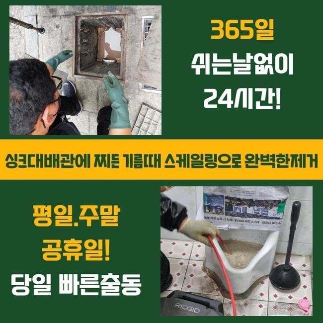
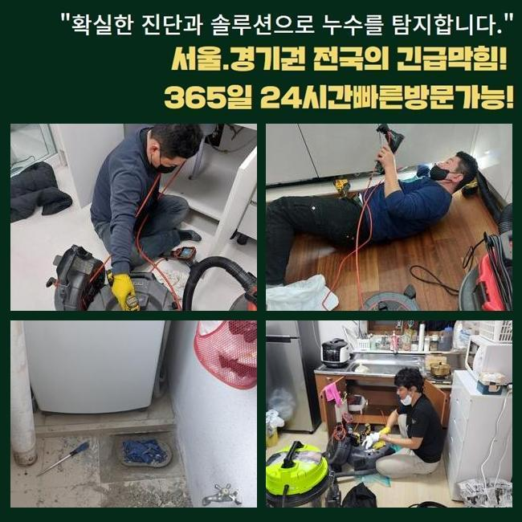
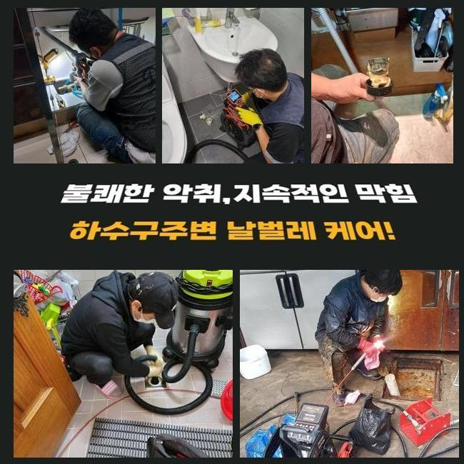
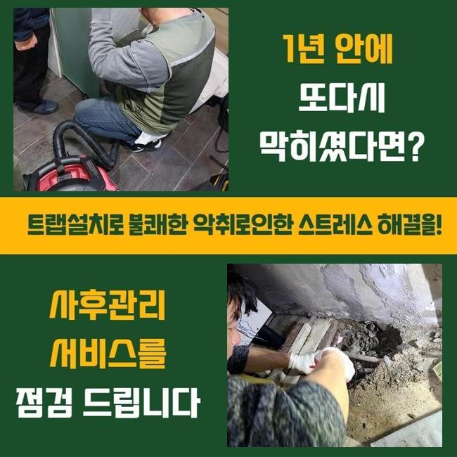
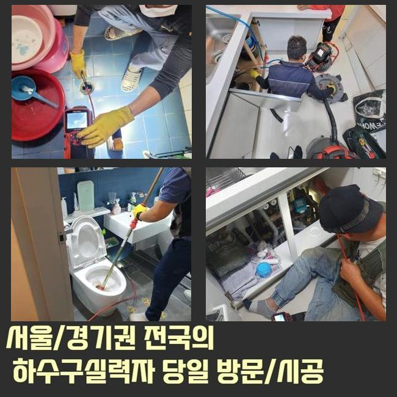
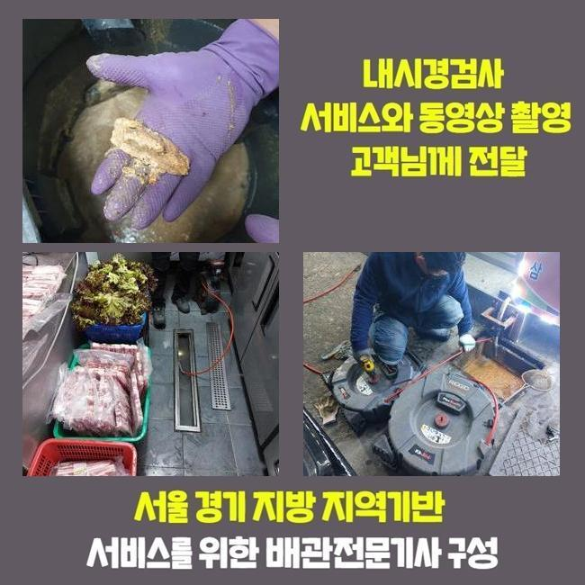
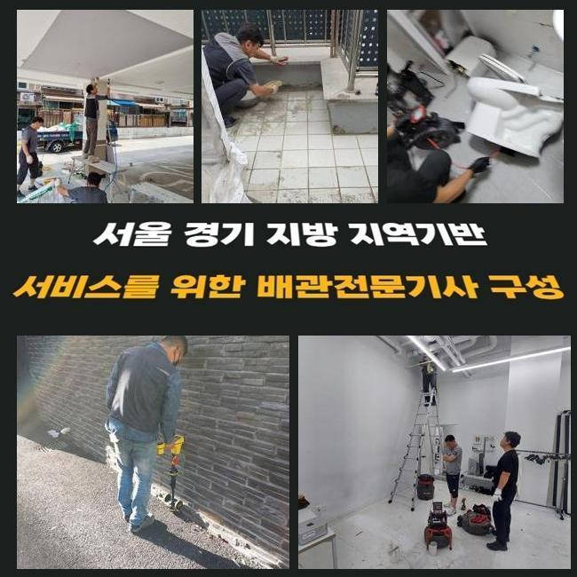

🏠 안양 비산동세탁실막힘 호계동 맨홀막힘 설비공사
안양 호계동 하수구막힘 전문 시공 후기

📋 작업 개요
- 위치: 안양 호계동, 호계동, 안양
- 서비스 유형: 하수구막힘, 배관막힘, 맨홀막힘, 역류해결, 배관청소, 고압세척, 설비공사
- 작업 일시: 2025. 2. 3. 21:03
- 업체명: 하수구수사대 (010-5615-2118)
🔍 문제 상황
안양 비산동세탁실막힘 호계동 맨홀막힘 설비공사
저희전문진은 얼마전 상업시설의 통수오류를 시정해내고자 내방했는데요
연락하셨던 의뢰자의 안내로 저희의경우 상가내의 화장실내에서 계속적인 이물질 역류 막힘들을 시정해내고자 내방했습니다
의뢰인은 해당 문제로 이용자로부터 민원들을 감당하고 계셨었죠
지금의 사태를 안정적으로 조치해줘야했기에 저희전문진은 도착하고서 이곳저곳을 관찰했는데요
꾸준히 축적되는 잔해가 배수구를 좁히게된걸 관찰한 후 빠르게 해결했어요
지금까지의 데이터로 추측하건대 해당 이물은 보통 메인관에서 관찰되기에 이런 문제들이 야기되지 않았나 판단했는데요
그러므로 빠르게 외부라인으로 자리를 옮겨 문제들을 야기시키는 하수도의 지점을 특정시키기위하여 검수를 시작했는데요
탐지기기를 이용하여 배관의 스팟을 특정시켰고 내측을 살폈더니 고착된 형상이 결코 가볍지 않았습니다
내부로부터 쌓이게된 생활 하수의 잔해들과 외부쪽에서 유입된 폐기물들까지 뒤섞인 모습이였어요

🔎 원인 분석
💡 전문가 진단: 정밀 진단 장비를 사용하여 슬러지의 고착 여부를 판명하고 타격/세척 작업을 실시했습니다.
이러한 배수정체를 해결하고자 빠르게 알맞는 대처를 이행했고 상가건축물의 시설을 장기간 유지되게끔 하였습니다
일정 구간들에 이물들이 쌓인다면 많은 통수오류를 유발시키기에 이물제거에 대해 조치해주는게 중요하겠습니다
점검해보니 이물들이 넓은 범위에 자리하고 있는걸 확인했는데요
이물들은 오랫동안 축적되면서 고착물로 고착되기 시작했어요
여러원인이 중첩되어 배수정체가 나타났다고 판단했죠
그러므로, 장비들을 통해 하수관을 청결하게 만들기로 했습니다
여러기기들로 배수관을 시공하는 시점에는 고압수청소가 중요한데요
만약에 맨홀쪽에 잔해가 자리잡고 있다면 전형적인 해결책으로는 무리일 수 있죠
그리하여, 고압수청소로 효율적으로 기름때들을 없애주는것이 중요하겠습니다
구간별 청소를 실시해주면 관로를 청결하게 사용할 수 있고 트러블들이 야기되는 것을 사전에 예방하게 됩니다
그리하여, 관로를 시공하는 시점에는 고압 세척과정을 고려하시는것도 좋겠습니다

🔧 작업 과정
같은 맥락으로 고착물이 누적되지 않을 정도로 정기적인 청소해주는게 중요하고 적합하게 대응한다면 골머리 앓는 일 없이 통수장애를 해결할 수 있습니다
이를 확인하고 결함들이 발생했을 때는 괄목할만한 해결책이 중요하고 전문가들의 도움들로 속 시원한 통수과정을 지켜내는게 이행되어야해요
기술적인 측면이 먼저겠지만 전문가와 협심하여 배관을 깨끗히 만들어주는게 실질적인 방법들이 됩니다
세척들을 문제없이 실시하기위해선 구조적설계와 특이성들을 알고 있어야 하죠
하수관은 여러 소재로 구성되며 시간이 흘러 튼튼함이 하락하기에 무리를 쏴주는것은 적절치못합니다
내구성과 위험요소들을 인지하고 올바른 방식을 이용해주어야 합니다
위와같은 조건을 꼼꼼히 체크하면 고압세척들로 최적의 배관컨디션을 얻게됩니다
이용했던 석션기기의 경우 압차를 삽입해 하수관의 잔해물을 안전하게 청소했는데요
석션바구니에 빠져나온 오염원의 잔해를 보았으며 내시경을 이용해 깊숙한 부분까지 살펴보니 고착물이 상당하여 배수상황에 애를 먹고 있었어요
이 부분은 염두에 두고 고수압의 방식으로 저희의경우 해당 장소에서 발생한 배수정체를 서둘러 안정적으로 해결해주며 배수관의 규모들과 고착정도를 파악해보고 청소를 실시해 적절한 통수 과정을 확보했습니다
이것은 8할 이상이 잔해가 내측에 축적되어 야기되는 증상으로서 내측으로부터 좁혀지게되어 유수흐름들이 중단되는 현상들이 걷잡을 수 없이 커지기도해요
이러한 상태라면 전문인들의 도움들로 내시경도구를 운용해 구석구석 진단하고 문제들을 유발하는 원인들을 제거시키는게 실시되야했습니다
고압수청소를 진행시키면서 저희업체는 진입부로 케이블들을 밀어넣어주고 2M 라인에선 슬러지들이 쏟아지며 빠져나가는것을 보게되었어요
허나 기름뭉치가 자리한 3미터 라인에선 이물들의 상황을 체크하고 수압의 세기를 조절해 해당 과정들을 진행해주었는데요
이물들의 고착정도들이 심각해서 온수 고압수청소를 진행시켰는데 안전을 지켜낼 수 있는 요소들을 준수하면서 기름슬러지를 제거시켰어요
배수정체의 경우 불현듯 등장해 다양한 불편을 발생케해요
오수가 안빠지는 문제의 경우 주로 잔해물이 문제가되서 발발하므로 한시라도 빨리 막힘들을 풀어주어야합니다


✅ 작업 완료
의뢰자의 고충을 덜고자 조속하게 대처해드릴게요
배수정체를 조사하고 알맞는 방식을 선정해 작업에 심혈을 기울이죠
신속한 시공이 중요하므로 장기간 등한시해선 안되겠습니다
도움들이 필요하다라면 언제라도 연락주세요!
트러블들이 발생하면 조속히 대응하여 안정적이고 깔끔한 통수과정을 유지시키겠습니다




⚠️ 하수구 배관 막힘 예방 및 관리 가이드
- ✅ 머리카락, 비닐, 물티슈 등 물에 분해되지 않는 이물질은 하수구 유입을 절대 금지해 주세요.
- ✅ 하수구 거름망을 씌우고 모여진 이물질은 주기적으로 쓰레기통에 바로 비워주셔야 합니다.
- ✅ 배관 노후가 심할 경우 이물질이 더 쉽게 걸리므로 주기적인 배관 세척(고압세척 등)을 권장합니다.
- ✅ 작업 후 1년 이내 재발 시 하수구수사대에서 무상 A/S 보증 서비스를 제공합니다.
💡 핵심 정리
- 확실한 장비 작업(내시경 점검 및 샤프트 스케일링)으로 원인을 뿌리 뽑습니다.
- 작업 후 1년 이내에 동일한 부위 재발 시 100% 무상 A/S 서비스를 보장합니다.
- 서울 · 경기 · 인천 전 지역에 24시간 언제든 긴급 출동할 수 있도록 항시 대기 중입니다.
❓ 자주 묻는 질문 (FAQ)
🚨 안양 호계동 하수구막힘 문제로 고민이신가요?
정확한 원인 진단과 확실한 시공으로 재발 없는 해결을 약속드립니다.
24시간 긴급 출동 | 서울 · 경기 · 인천 전지역 | 1년 내 재발 시 무상 A/S